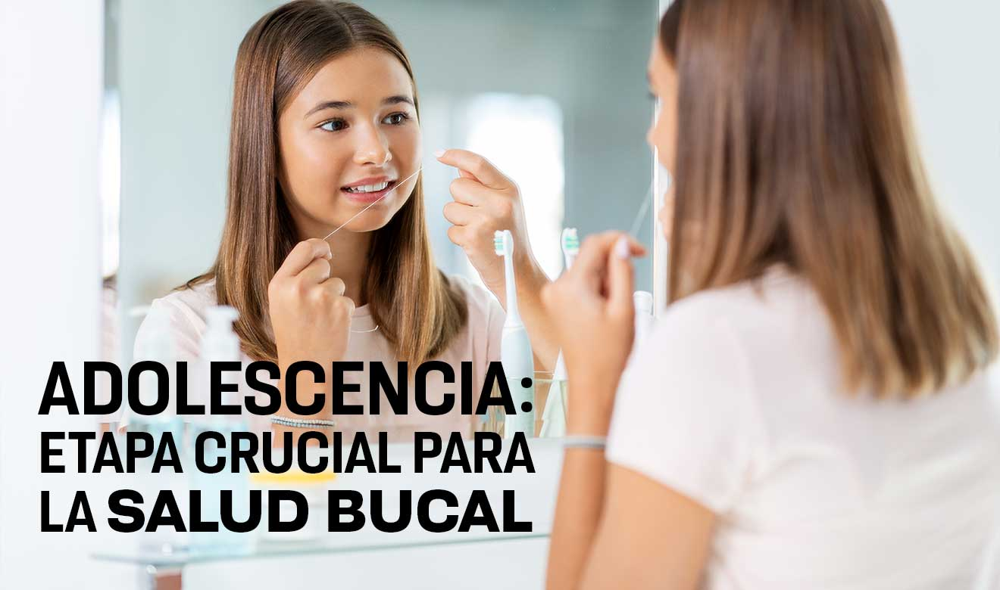

Durante la adolescencia

El consumo frecuente de bebidas ácidas (gaseosas, energizates, jugos) desgasta los dientes.
El uso de piercing en la boca o lengua, no solo retienen alimentos y microbios que aumentan el riesgo de enfermedad bucal sino que tambien pueden traumatizar las piezas dentales.
Para practicar deportes de impacto, es necesario usar protector bucal. Los golpes bruscos en la boca pueden romper los dientes.